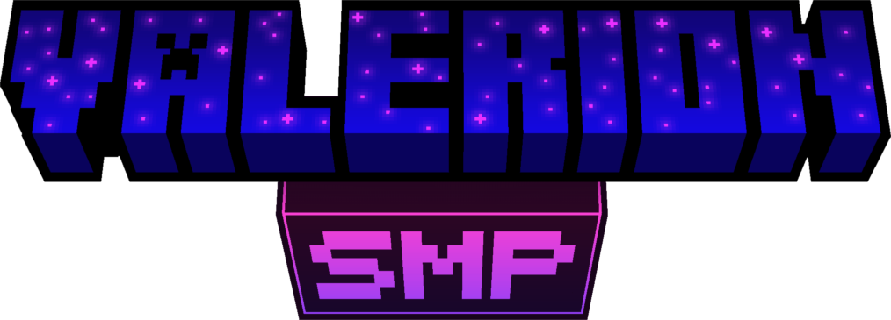

What is the Server about?
ValerionSMP is a whitelisted modded Minecraft SMP set in the world of Valeria. Built on Forge 1.20.1, it features a completely overhauled world with new biomes, dimensions, mobs, and boss encounters — alongside quality of life mods like proximity voice chat, custom storage, and a dynamic map. It's a chill, community-driven server focused on exploration, building, and playing together
Discord
https://discord.gg/Zja5NGYdJG
How to Start the Server:
- Login to aternos.org.
- Username : ServerValerion
- Password : Server123Valerion!
Server IP:
Features
- 🌍 Terralith — overhauled terrain and biomes
- 🌿 Biomes O' Plenty — massive new biomes
- 🏛️ Repurposed Structures — new structures throughout the world
- 🏘️ Overhauled Villages — improved villages
- 🌊 Hydrological — beautiful rivers and waterways
- ⛵ Small Ships — sailboats and ships
- 🌌 Astral Dimension — brand new dimension
- 🔚 Better End — overhauled End dimension
- 🌀 Custom Nether Portals — custom portal shapes
- 👹 L'Ender's Cataclysm — massive boss fights
- 🦎 Alex's Mobs — huge variety of new mobs
- 🐾 Critters & Companions — cute tameable creatures
- 💎 Artifacts — powerful loot items
- ⚗️ Relics — new equipment and items
- 🗡️ Spear — spear weapon added back
- 🧬 Origins — pick a unique race with special abilities
- 🔧 Quark — tons of small vanilla+ additions
- 🍎 Apple Skin — shows food saturation info
- 💀 Hold My Items — keeps your items on death
- 🎙️ Simple Voice Chat — proximity voice chat
- 📦 Tom's Simple Storage — unified chest network
- 🗺️ Xaero's Minimap & World Map — never get lost
- 📖 JEI — item and recipe browser
- 🔍 Jade — shows what you're looking at
- 🔦 Dynamic Lights — held torches light up surroundings
- 🪴 Supplementaries — extra decorative blocks
- 🛋️ Refurbished Furniture — furniture blocks
- 🍂 Falling Leaves — leaves fall from trees
- ✨ Subtle Effects — visual polish
- 🍖 Eating Animation — animated eating
- ⚡ Sodium/Radium/Starlight — massive performance boost
- 🧠 Saturn/Ferrite Core/ModernFix — memory optimization
- 💬 Discord Chat Bridge — chat synced to Discord
- 🎨 Custom Skin Loader — use any skin